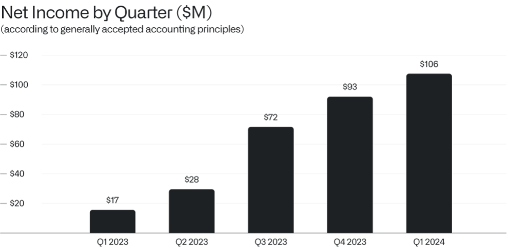
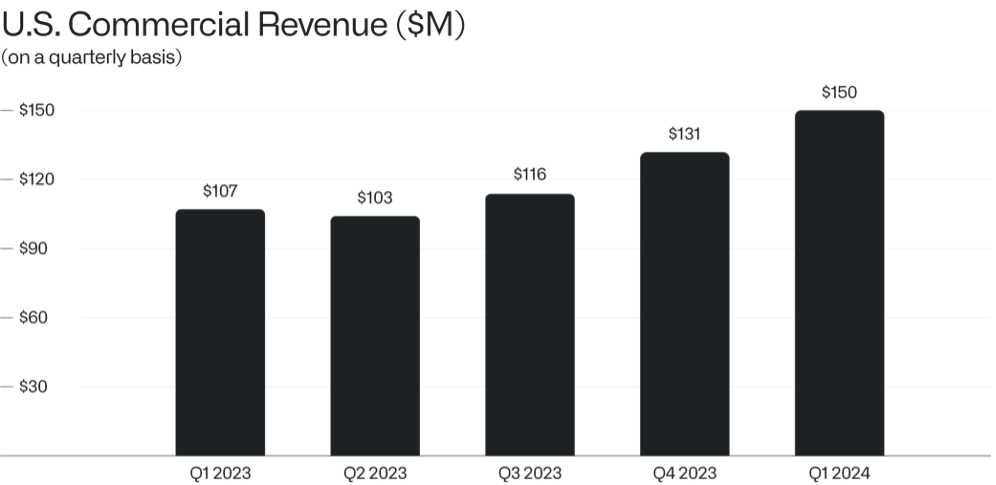

致股东的信
2024年5月6日

I.
多年来，我们关于软件应如何构建以及软件能够实现什么的观点，一直被讥讽为边缘之见。
投资者一再告诉我们，为企业市场乃至政府机构构建技术基础设施，是让一家企业走向覆灭的最稳妥、最快捷的方式。许多人对支持我们望而却步。另一些人则坚持认为我们应该专注于满足消费者的需求。还有更多人干脆不回我们的电话。
然而，市场已经发生了转变，而且转变得很快。
我们的业务如今正以如此规模和速度增长，以至于即使是我们最热忱的支持者也很难说这是有可能的，甚至是可能实现的。
仅在2024年第一季度，我们就创造了6.34亿美元的营收，同比增长21%，大幅超出我们指引的上限。
此外，我们曾承诺终将实现的利润——怀疑论者曾一再自信地断言这是我们力所不及的——如今已经到来。
在截至2024年3月31日的三个月里，我们赚取了1.06亿美元的利润，这是公司二十年来最大的季度利润。作为对比，我们如今单个季度赚取的利润，已超过十多年前我们一整年创造的营收总额。

我们的核心洞见，也是最根本的承诺，是：我们正在构建的软件产品，及其实力与精深程度，必须始终处于整个公司的中心位置。
多年来，我们一直在投资并完善我们的企业软件平台。如今，越来越多的美国企业界客户正在找到我们，他们比以往任何时候都更加意识到，人工智能和大语言模型在重塑他们所处行业方面将发挥何等重要的作用。
二、
其他公司投入复杂而精心的努力来推销和营销他们的产品。他们的资源集中于营销，却牺牲了实际构建软件和打造他们希望出售的系统。
我们采取了不同的方式，如今更是加大投入，让潜在合作伙伴直接使用我们的软件，从而自行判断什么有效、什么无效。
仅上个季度，我们就与各行各业、各个领域的组织开展了超过660场训练营活动，为潜在合作伙伴提供在我们的平台上进行测试并开始构建的机会。这些企业等不及定制解决方案的打造。他们也不愿投资于也许在遥远的将来某天才能奏效的软件系统。
他们需要立竿见影的成果。而我们相信，我们拥有唯一行之有效的平台。
我们上个季度的营收正是这种不受约束且不断增长的需求的体现。在截至2024年3月31日的期间，仅在美国商业市场，我们就创造了1.5亿美元的营收，同比增长40%。我们目前预计，2024年美国商业业务的营收将比2023年增长45%或更多。

我们预计，上个季度占我们营收24%的美国商业业务，在短期内仍将是我们增长最重要的驱动力之一。
三、
我们作为一个文化共同体所取得的最引人注目的发现，能否找到有用的商业和工业应用，绝非必然之事。
我们构建的软件平台为企业带来可量化且变革性的成果。我们的合作伙伴需要合适的软件基础设施——即底层技术架构，这是有效实现回写功能、数据血缘追踪、大语言模型，以及更广泛地实现人类与算法代理之间协作交接的前提条件——以使人工智能真正发挥作用。
我们的目标是让人工智能平台（AIP）成为市场上最占主导地位的基础设施，并为各机构有效部署人工智能和大语言模型提供支持。
为此，我们正努力让 AIP 覆盖我们所服务市场中更广泛的组织，包括美国国内外的各类企业、州和地方政府机构，以及科研人员和学术机构。
四、
本世纪的战争将继续被软件所改变。
许多人对人工智能在军事领域的应用感到担忧，包括其可能催生更具自主性甚至自我导向的武器系统。
然而，较少有人注意到的是，软件——包括目前用于目标选择和任务规划的各类系统——在消灭敌方与保护无辜者免受伤害方面同样至关重要。
我们的国防和情报合作伙伴所使用的平台，对敌人的生存构成了非常现实的威胁。
但这些同样的软件系统，也可能促成并确实加速终结一个全面且无差别战争的时代。
此致，

Alexander C. Karp
首席执行官兼联合创始人
Palantir Technologies Inc.
前瞻性声明
本函包含《1995年私人证券诉讼改革法》“安全港”条款所界定的“前瞻性陈述”，包括但不限于有关我们的财务展望、产品开发及相关时间安排、分销和定价、我们软件平台的预期效益和应用、业务战略和计划（包括与我们的Artificial Intelligence Platform（“AIP”）相关的战略和计划、销售和营销工作、销售团队、合作伙伴关系和客户）、对我们业务的投资、市场趋势和市场规模、机遇（包括增长机遇）、我们对在各类实体中的现有和潜在投资及商业合同的预期、我们对宏观经济事件的预期、我们对市场指数潜在资格或纳入的预期、我们对股票回购计划的预期以及定位的陈述。这些前瞻性陈述是在首次发布之日作出的，基于当时的预期、估计、预测和推算以及管理层的信念和假设。诸如“指导”、“预期”、“预计”、“应该”、“相信”、“希望”、“目标”、“预测”、“计划”、“目标”、“估计”、“潜在”、“预测”、“可能”、“将”、“或许”、“可以”、“打算”、“应”等词语以及这些词语的变体或其否定形式和类似表述，旨在识别这些前瞻性陈述。前瞻性陈述受诸多风险和不确定性的影响，其中许多涉及超出我们控制范围的因素或情况。由于多种因素，我们的实际结果可能与前瞻性陈述中所述或暗示的结果存在重大差异，这些因素包括但不限于我们向证券交易委员会（“SEC”）提交的文件中详述的风险，包括我们截至2023年12月31日的财季和财年的10-K表格年度报告，以及我们可能不时向SEC提交的其他文件和报告，包括提供我们截至2024年3月31日财季收益新闻稿的8-K表格当前报告，以及我们截至2024年3月31日财季的10-Q表格季度报告。特别是，以下因素（除其他因素外）可能导致我们的结果与此类前瞻性陈述所表达或暗示的结果存在重大差异：我们成功执行业务和增长战略的能力；我们的现金和现金等价物满足流动性需求的充分性；市场对我们平台、产品和服务的一般需求；我们增加新客户数量和从客户获得收入的能力；我们实现客户合同的全部或部分合同价值作为收入的能力，包括客户可获得的任何合同选择权或受便利终止条款约束的合同期限；我们漫长且不可预测的销售周期；我们成功执行渠道销售和与第三方的其他战略举措的能力；我们保留和扩大客户群的能力；我们的经营业绩和关键业务指标在未来期间按季度波动的可能性；我们业务的季节性；我们平台的实施过程可能复杂且漫长；我们成功开发和部署新技术以满足现有或潜在客户需求的能力；我们使平台和产品更易于安装、消费和使用的能力；我们维护和提升品牌及声誉的能力；随着业务增长以及追求业务和财务目标，我们维护和提升企业文化的能力；有关我们的新闻或社交媒体报道，包括但不限于呈现或依赖不准确、误导性、不完整或具有其他损害性信息的报道；近期或未来的全球宏观经济和地缘政治事件（例如持续的俄乌冲突和以色列冲突、美国及其他国家利率上升、货币政策变化和外汇波动）对我们公司或现有或潜在客户和合作伙伴的业务和运营的影响；在我们的平台中使用人工智能所引发的问题；以及对我们或客户或第三方数据的任何泄露或访问。
本信函中包含的前瞻性陈述仅代表我们在本信函发布之日的观点。我们预计后续事件和发展将导致我们的观点发生变化。我们不承担更新或修订任何前瞻性陈述的意图或义务，无论是基于新信息、未来事件还是其他原因。不应将本信函发布之日之后的任何日期的前瞻性陈述视为代表我们的观点。过往业绩并不必然预示未来结果。
其他说明
本函件可能包含基于独立行业出版物或其他公开信息以及基于我们内部来源的其他信息的统计数据、估算、预测和陈述。这些信息涉及许多假设和限制，请勿过度依赖这些估算。我们未独立核实这些行业出版物和其他公开信息中所含数据的准确性或完整性。因此，我们不对该等数据的准确性或完整性作出任何陈述，也不承诺在本函件日期之后更新该等数据。
本信函在讨论我们的业务时可能提及各种增长率。除非另有说明，这些增长率反映的是同比比较。
收到本信函即表示您确认，您将自行负责对市场及我们的市场地位进行评估，并将自行开展分析，且全权负责就所提供的信息（包括关于我们业务潜在未来表现的信息）形成自己的观点。